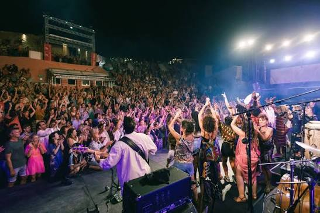

Fiest’A
SèteMusiques du monde face à la Méditerranée


⟹ Fêtes & traditions ⟸
Fiest’A Sète naît en 1997 à l’initiative de José Bel et de l’association Métisète. Le projet s’appelle d’abord Fiesta Latina et s’enracine dans la passion des fondateurs pour les musiques afro-cubaines. Très vite, le festival élargit son horizon aux musiques d’Afrique, de Méditerranée, des Balkans, de l’océan Indien et des Amériques, jusqu’à devenir Fiest’A Sète.
La ligne artistique repose moins sur une catégorie commerciale de world music que sur l’idée de musiques vivantes : traditions réinventées, métissages, formes populaires et savantes, artistes patrimoniaux et créations contemporaines. Le festival revendique la découverte, le dialogue interculturel et une programmation affranchie des formats les plus standardisés.

En 2026, la manifestation a célébré sa 29e édition, du 18 juillet au 3 août. L’organisation a annoncé près de 20 000 spectateurs, quinze jours de festival, cinq lieux et plus de 150 artistes, avant une 30e édition attendue en 2027.
Un projet associatif durable. Fiest’A Sète reste porté par l’association Métisète, créée autour du festival et soutenue par une équipe de bénévoles et de professionnels. Depuis l’origine, son ambition est de faire de la musique un outil de découverte des cultures et de dialogue, en privilégiant les artistes et les répertoires qui circulent entre héritage, création et métissage.
Le Théâtre de la Mer transforme chaque concert en rencontre entre la scène, la pierre et l’horizon méditerranéen.
— Synthèse documentaire — L’Âme des RégionsLe temps fort de Fiest’A Sète se déroule au Théâtre de la Mer, ancien fortin côtier devenu amphithéâtre à ciel ouvert. Adossé à la corniche, il offre la Méditerranée comme fond de scène, ce qui contribue fortement à l’identité visuelle et émotionnelle du festival.
La manifestation ne se limite pourtant pas à ce lieu emblématique. Une première partie du festival propose des rendez-vous gratuits à Sète et à Poussan : concerts, DJ sets, rencontres et propositions culturelles dans différents espaces de la ville, sur la plage ou dans des équipements culturels.
Cinéma, expositions, ateliers destinés au jeune public et stands de cuisine du monde prolongent l’expérience musicale. Cette programmation périphérique fait de Fiest’A Sète un festival culturel au sens large, attaché à la circulation des œuvres et des publics.
Une formule en deux temps. L’identité du festival tient aussi à son ouverture hors du Théâtre de la Mer : une première semaine de concerts et DJ sets gratuits permet de toucher un public large à Sète et Poussan, avant les soirées thématiques payantes du Théâtre de la Mer. En 2026, six soirées s’y sont succédé du 29 juillet au 3 août, dont quatre ont affiché complet.
Au fil des éditions, Fiest’A Sète a accueilli ou rapproché sur scène des artistes majeurs de différentes traditions. Le festival cite parmi ses rencontres mémorables Taj Mahal et Bassekou Kouyaté, Manu Dibango et Hugh Masekela, Lili Boniche et Idir, Omara Portuondo et Diego El Cigala, ou encore des croisements autour d’Oumou Sangaré, Fatoumata Diawara et Hindi Zahra.
Une autre singularité réside dans les affiches originales confiées chaque année à des artistes plasticiens. Richard Di Rosa, Hervé Di Rosa, Robert Combas, André Cervera ou Pierre François comptent parmi les créateurs associés à cette mémoire graphique.
L’identité du festival tient enfin à son équilibre entre exigence artistique et convivialité : grandes soirées payantes au Théâtre de la Mer, concerts gratuits, cuisine du monde, ateliers, projections et temps de rencontre.